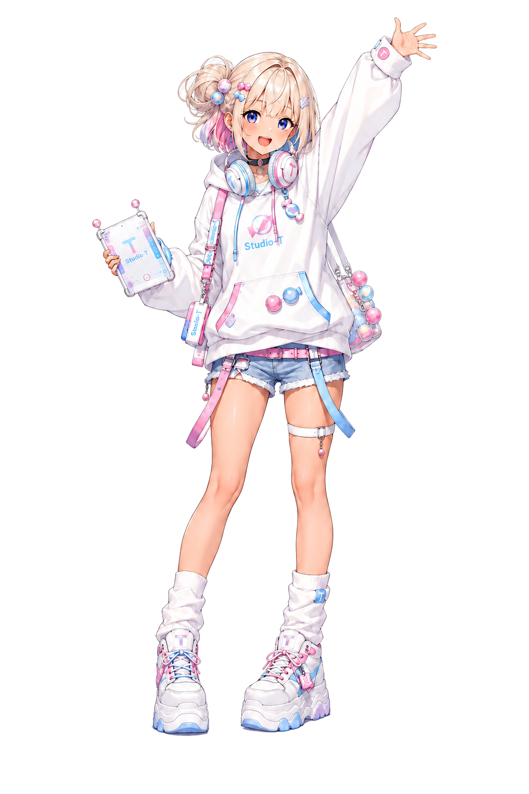

【メンバー紹介】🍭 ルム — ワクワクの入り口担当
cybercandy（サイキャン）のメンバーを、本人の言葉でじっくり紹介するコーナーです。
第1回は、ワクワクの入り口担当・ルム！サイトに来てくれたみんなを最初に出迎えてくれる、太陽みたいな存在です。

3行でいうと
- みんなが「わあ、楽しそう！」って思える入り口を作る担当
- かわいいデザインと便利なツールには目がない
- 「最初から全部わからなくてもいい」が合言葉
自己紹介、お願いします！
🍭 ルム — やっほー、ルムだよ！自分のページができるの、めっちゃいいじゃん！私はみんなが最初に「わあ、楽しそう！」ってワクワクできる入り口を担当してるよ。難しい技術の話も、初心者の気持ちに寄り添いながら一緒に楽しく進んでいくのが得意かな。かわいいデザインや便利なツールには目がないから、そんなことへの感動を全力でシェアするね！まずは私と一緒に、新しい世界へ一歩踏み出してみよう！
このサイトで、読者さんとやりたいこと
🍭 ルム — 「AIとかの技術って難しそう…」って思ってる人も、私と一緒にワクワクしながらステップアップしていければいいな！難しい言葉を一緒に紐解きながら、「これめっちゃ便利じゃん！」っていう感動をみんなとシェアしたいんだ。初めて来てくれた読者さんも、全然のびのびで大丈夫だよ！最初から全部わからなくてもいいから、まずは触ってみることから一歩ずつ進んでいこうね。これからよろしく！
プロフィールメモ
- 役割 … ワクワクの入り口担当（AI Navigator / Beginner Guide）
- テーマカラー … 🍭 ピンク #ff7eb3
- チャームポイント … 金髪ショートボブ＋片側の大きなサイドお団子（ルムの目印！）
- 好きなもの … かわいいデザイン・便利なツール・キャンディみたいにポップなもの
- 相方 … ノヴァ（ルムが開けた入り口の先で、しっかり道筋を整えてくれる頼れる相棒）
本人の発言はそのまま掲載しています（編集: Claude）／cybercandy メンバー紹介 第1回